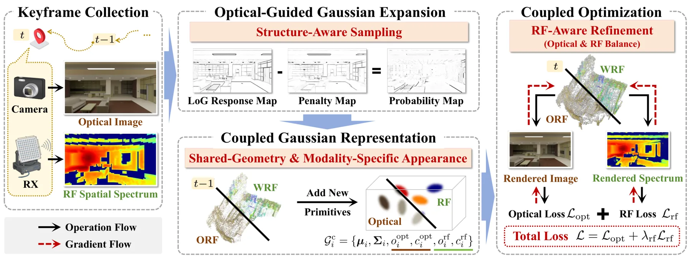
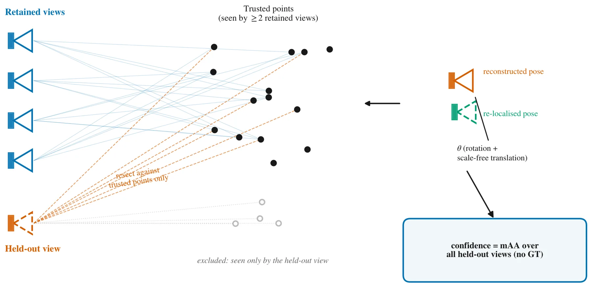
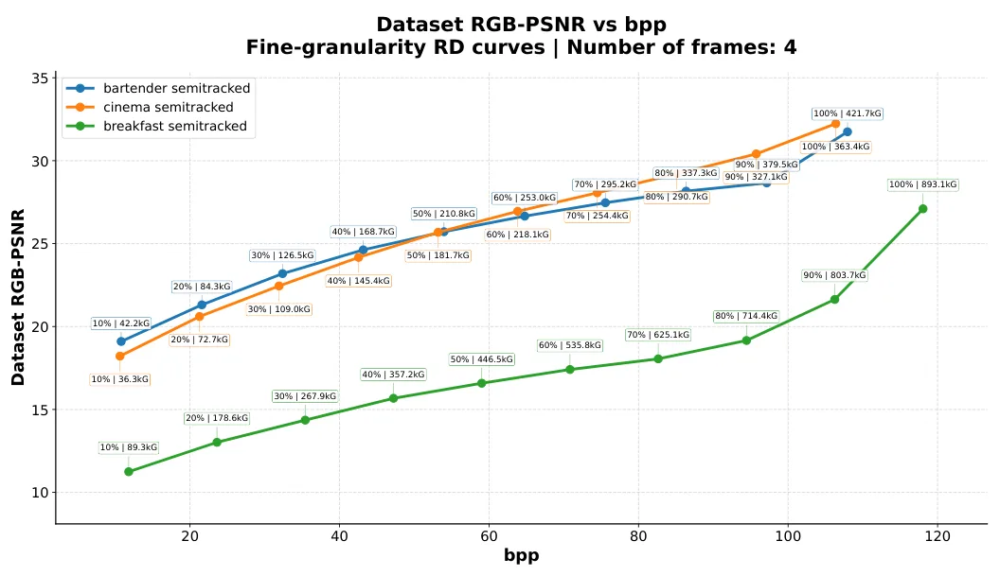
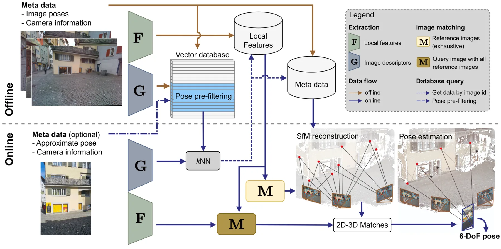
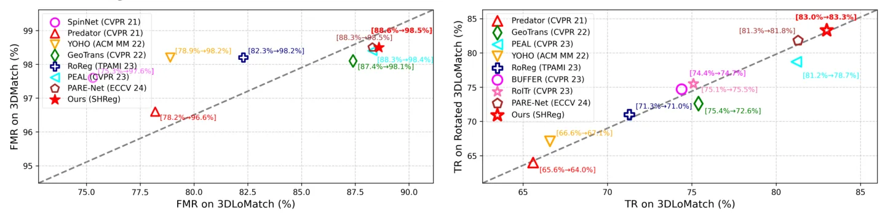
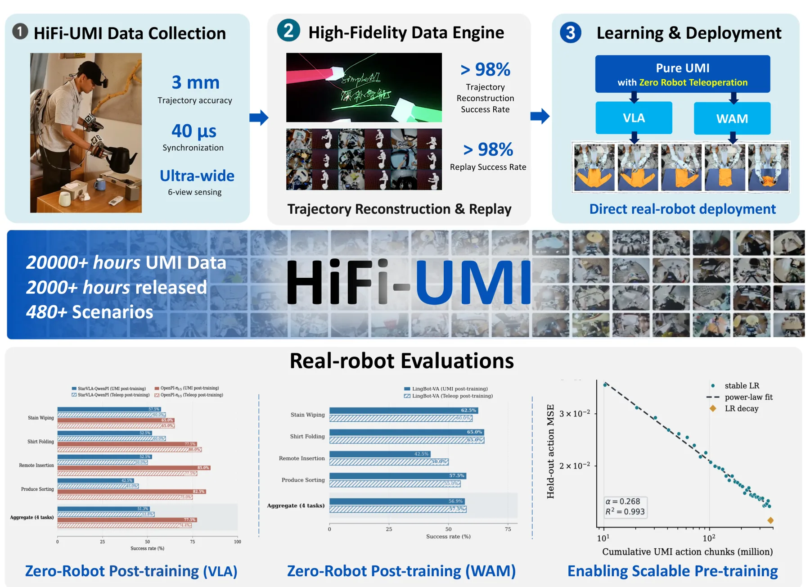
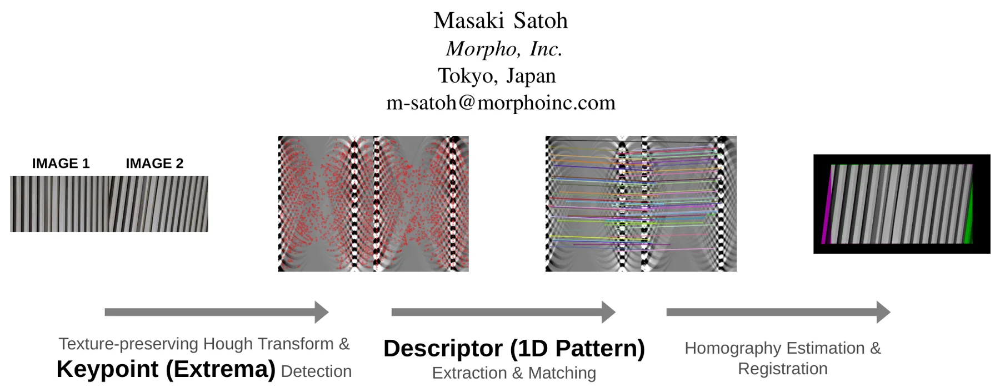
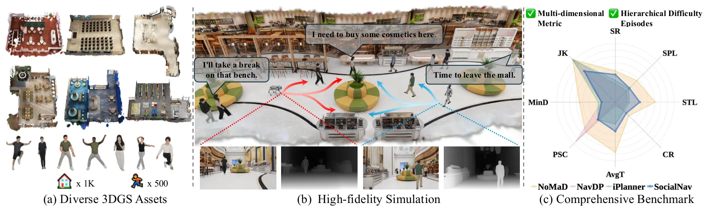
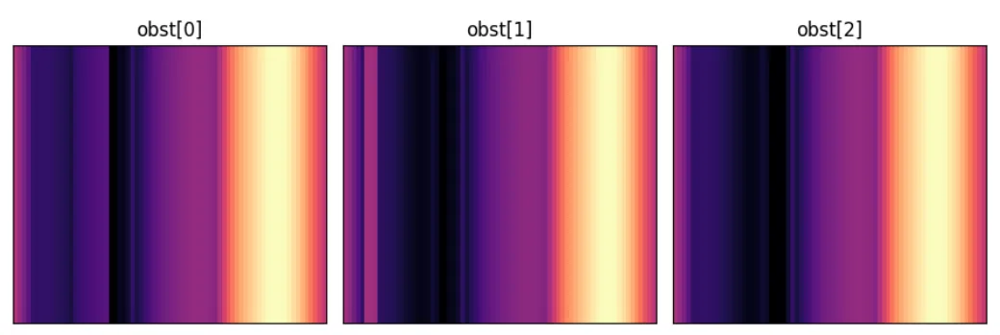

新论文 · 日期 2026-07-28 · score 14 · eess.SP, cs.AI, cs.CV, cs.IT
作者：Jinya Zhang, Jiajia Guo, Chao-Kai Wen, Shi Jin
评分 8.4/10
3DGS无线辐射场光学-RF 融合在线重建跨模态地图
一句话工作总结：以共享几何、模态专属外观和在线关键帧优化耦合视觉与 RF Gaussian 地图，仿真中将无线辐射场重建加速 6.4×。
现有基于 3DGS 的无线辐射场重建通常依赖预采集观测和离线优化，难以及时提供信道知识。CORF-GS 顺序处理 optical/RF keyframes，以共享几何和模态专属外观构成统一 Gaussian representation。新关键帧到达时，系统先利用高分辨率光学图像提供结构先验，在表示不足区域执行 optical-guided Gaussian sampling；随后通过 coupled optica…
Recent advances in 3D Gaussian Splatting (3DGS)-based wireless radiance field (WRF) reconstruction provide an efficient solution for wireless channel modeling. However, existing WRF reconstruction methods rely…

新论文 · 日期 2026-07-26 · score 12 · cs.CV, cs.RO
作者：Behnam Asadi
评分 9.3/10
摄影测量自验证Bundle AdjustmentRTK 误差绝对精度
一句话工作总结：严格的 track-level 留出仍无法识别自一致的全局畸变，因此内部一致性不能替代 RTK/GCP 等绝对精度控制。
本文研究三维重建能否在没有 ground truth 时估计自身可靠性。协议确定性留出部分图像，并只允许它们针对至少被两张 retained images 观测的 3D points 重定位，从 track level 阻止测试视图使用自己参与创建的结构，再汇总为 mAA confidence。跨 GNSS-referenced captures、ETH3D、EuRoC 与 IMC 2025 的实验表明：良好重建具…
Automated photogrammetric inspection emits metric measurements from a 3D reconstruction whose own correctness is normally unknown without an external survey. Can a reconstruction estimate its own reliability w…

新论文 · 日期 2026-07-29 · score 11 · eess.IV, eess.SP
作者：Muhammad Talha, William Gordon, Sajid Umair, Anique Akhtar
评分 7.8/10
3DGS三维流媒体可伸缩编码MPEG-DASH渐进传输
一句话工作总结：通过质量/分辨率分层、时空预测和重要性 packetization，把 dynamic 3DGS 接入 MPEG-DASH 式自适应渐进传输。
Dynamic 3DGS 的表示体积和帧间冗余给自适应传输带来压力。SplatStream 将 GS scene 分解为质量层与分辨率层，使用 inter-layer predictive coding 实现 scalability，并在时间维引入 B-frames 形成 temporal quality scalability。轻量 cross-layer transformer 同时承担跨层与时间预测；volu…
Dynamic 3D Gaussian Splatting (GS) enables high quality real-time rendering for immersive media, but its large representation size and frame-wise redundancy create significant challenges for adaptive streaming…

新论文 · 日期 2026-07-27 · score 11 · cs.CV, cs.RO
作者：Jonas Meyer, Stephan Nebiker, Pascal Theiler, Norbert Haala
评分 9.2/10
视觉定位街景影像Structure-from-Motion测量级定位GNSS 补充
一句话工作总结：以亚厘米真值和跨期 10 km 街景数据验证视觉定位的厘米级潜力，为 GNSS 补充定位提供测量级基准。
本文系统研究 visual localization 在测量级需求下的精度潜力，并发布 FHNW Muttenz dataset：覆盖连续 10 km 街网、两次相隔约 1.5 年的 mobile mapping campaigns，包含高分辨率 reference imagery、四种 camera 的 query sequences 和亚厘米级 6-DoF ground truth。定位流程以精确地理配准街景图…
Accurate and reliable pose information with respect to a reference frame is increasingly demanded across applications such as autonomous navigation, surveying, robotics, and augmented and mixed reality. Visual…
新论文 · 日期 2026-07-27 · score 10 · cs.CV
作者：Jiaheng Li, Binsheng Zhang, Xinhai Chang, Wenzheng Chen
评分 9.5/10
SLAM结构光神经深度深度跟踪三维重建
一句话工作总结：以增强的神经结构光深度主导 tracking，只在退化时补充稀疏视觉与轻量 BA，实现 20.9 FPS 的稳健 SLAM。
NSL-SLAM 面向 structured-light camera 构建 depth-centric SLAM。深度端在 neural structured-light stereo decoding 中加入强 monocular depth priors，在 Replica-SL 上相对 NSL 将 depth RMSE 降低 35%。系统将 dense、metric structured-light geo…
Structured-light (SL) cameras power depth sensing in millions of devices, and recent neural SL decoding methods have substantially improved their depth quality. SLAM systems can benefit greatly from such stron…

新论文 · 日期 2026-07-25 · score 9 · cs.CV
作者：Chongjian Wang, Junjie Gao
评分 9/10
点云配准SO(3) 等变球谐函数刚体变换对应点匹配
一句话工作总结：联合学习严格 SO(3) 等变特征与旋转不变描述子，使对应点直接提出刚体变换并减少 RANSAC 采样。
SHReg 基于 SO(3) representation theory 构建严格 rotation-equivariant point cloud registration。方法用 SO(3) irreducible representations 表示局部几何特征，不依赖 local reference frames 或大量 rotation augmentation；球谐等变 backbone 联合学习用于…
Point cloud registration critically depends on local features that are both distinctive and robust to arbitrary 3D rotations. Existing learning-based methods typically approximate rotation invariance via fragi…

新论文 · 日期 2026-07-28 · score 8 · cs.RO, cs.CV, cs.LG
作者：Simple AI, :, Yuteng Wei, Jinming Ma
评分 8/10
视觉惯性 SLAM机器人示教多相机同步轨迹重建数据集
一句话工作总结：以离线 stereo-inertial SLAM、原生双手相对位姿和微秒同步生产 3 mm 局部精度、2,000 小时的机器人示教数据。
HiFi-UMI 是便携式机器人示教数据生产系统，围绕 trajectory accuracy、双 gripper relative pose、同步与视场联合设计。系统采用 head-mounted offline stereo-inertial SLAM、直接测得而非重建的 relative pose、共享微秒级 GPIO trigger，以及每只手两台覆盖约 200° 的 wide-angle cameras，…
Learning deployable manipulation policies is bottlenecked by the scarcity of data that is both high-fidelity and scalable. Real-robot teleoperation is accurate but costly to scale; robot-free UMI capture scale…

新论文 · 日期 2026-07-28 · score 8 · cs.CV, cs.RO
作者：Masaki Satoh
评分 8.5/10
视觉前端Hough 变换线特征弱纹理单应估计
一句话工作总结：将线结构变为 Hough 空间极值并做一维描述子匹配，为弱纹理实时视觉前端提供轻量、免训练方案。
点特征前端在强线结构或弱纹理环境中容易失败，而传统 line extraction/description 对 edge robotics 过于昂贵。HOME 将图像变换到 Hough space，把全局线结构映射成稳定 local extrema 并作为 keypoints，从而把复杂 line matching 改写成高效的一维 point matching。其 1D radial descriptor 在无需…
Visual front-ends for robotic localization typically rely on point-based features such as Oriented FAST and Rotated BRIEF (ORB), which frequently fail in structured environments dominated by strong linear stru…

新论文 · 日期 2026-07-28 · score 8 · cs.RO
作者：Weiqi Huang, Dianyi Yang, Jiaxin Li, Shuangyi Dong
评分 7.7/10
3DGS社会导航机器人仿真视觉导航Sim-to-Real
一句话工作总结：用 3DGS 场景与行人、语义轨迹和人体运动生成构建照片级社会导航平台及多维 benchmark。
SONG 是由 3D Gaussian Splatting 驱动的 social navigation 平台，以 3DGS 表示场景和 avatar，使用大语言模型生成 semantically grounded pedestrian trajectories，再由 trajectory-conditioned generator 合成连续自然的全身运动。配套 SONG-Bench 按难度组织 evaluation…
Social navigation has progressed from simplified 2D environments toward a more general vision-based setting, in which a robot needs to achieve socially compliant behavior purely from onboard visual observation…

新论文 · 日期 2026-07-28 · score 7 · cs.RO, cs.AI, cs.LG
作者：Thomas Hickling, Dylan Wynne, Yu Su, Nabil Aouf
评分 8.2/10
多无人机共享体素地图LiDAR无 GNSS 导航多智能体强化学习
一句话工作总结：多机 LiDAR 在世界坐标系融合共享 voxel map，各机从自我对齐 BEV crop 分散控制，并在无 GNSS 室内完成双机实验。
该系统将多架无人机的 360° LiDAR observations 融合到共享 world-frame occupancy voxel map，再转换成紧凑 BEV representation，并向每个 agent 提供 ego-aligned local crop，形成 integrate-in-world、act-in-ego 的空间融合与 decentralized control。策略在 central…
This paper presents a cooperative indoor UAV guidance framework that combines a shared voxel-map world model with a multi-agent Soft Actor-Critic (MASAC) controller. Multiple drones fuse 360 LiDAR observations…